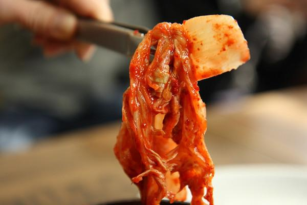
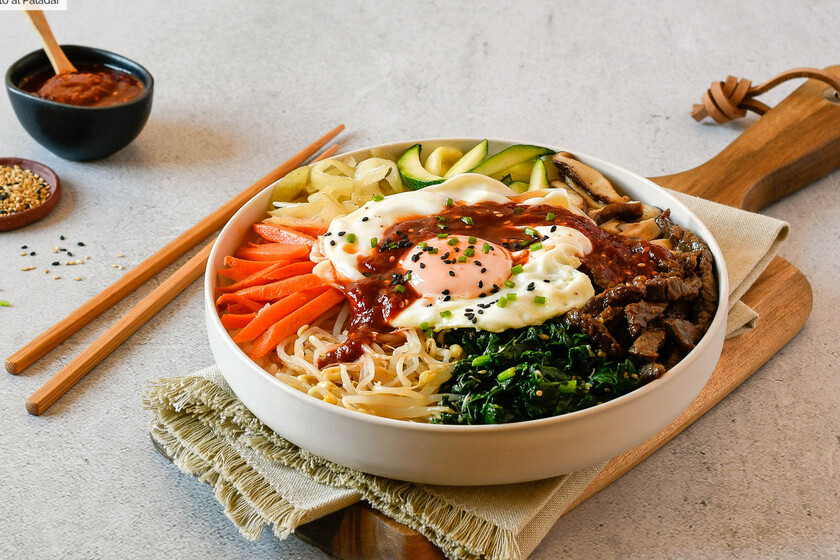
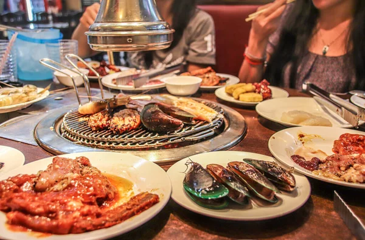
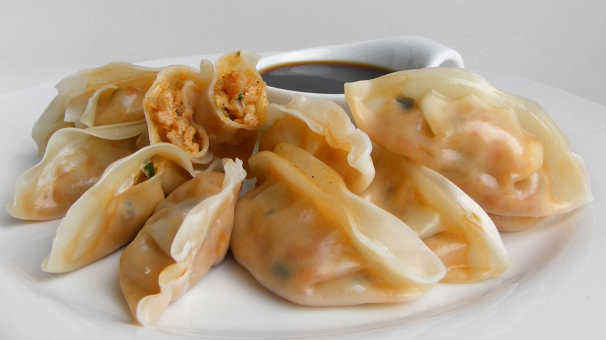

1. Kimchi

No nos gusta generalizar, pero es seguramente uno de los platos coreanos más conocidos, en una época en la que los fermentados en la gastronomía son un básico absoluto.
Hay muchísimas clases de kimchis, en función de las verduras empleadas en su elaboración. Sin duda, el de col china es el más famoso, y también el que solemos encontrar en España. Además de servir de guarnición, es una base popular para otras muchas recetas coreanas.
Tal es su importancia que forma parte de la lista representativa del Patrimonio Cultural Inmaterial de la Humanidad de la UNESCO. No es de extrañar, porque tiene una historia milenaria, ya que resultaba una manera excepcional de conservar ingredientes y verduras sin refrigeración.
2. Bibimbap

Te presentamos esta receta de bibimbap, un plato muy popular de la gastronomía de Corea. "Bibimbap" significa, literalmente “arroz mezclado” o “comida mezclada”. Y se trata justamente de eso: un recipiente rebosante de arroz con vegetales y carne.
Si te gusta revolver, este plato de arroz es para ti. Además del cereal en cuestión, el bibimbap incluye diferentes vegetales, huevo y carne a las que se incorpora aceite de sésamo y pasta de pimiento rojo. Suele tomarse junto a una sopa.
3. Gogi güi o Barbarcoa coreana

La barbacoa coreana, o gogi gui, se refiere al método de asado coreano para cocinar carne de cerdo, ternera y pollo. El método se distingue por el uso de una parrilla de gas o carbón que generalmente está integrada en la mesa del comedor, donde los comensales preparan su propia carne en rodajas finas. Aunque la forma más común es para asar costillas de res, o galbi, el asado coreano es un término general que abarca una variedad de platos de carne y mariscos marinados y no marinados. La barbacoa coreana normalmente se sirve con una serie de guarniciones o banchan, como ensalada de cebolla verde o lechuga con pepinos y pimientos.
4. Mandu

Mandu ( 만두 ;饅頭) son bolas de masa en la cocina coreana . Mandu se puede cocinar al vapor, hervir, freír o freír. Los estilos también varían según las regiones de la península de Corea . Los mandu fueron durante mucho tiempo parte de la cocina de la corte real coreana , pero ahora se encuentran en supermercados, restaurantes y lugares de bocadillos como pojangmacha y bunsikjip en toda Corea.
5. Galbitang
Galbitang es una sopa abundante y nutritiva hecha con costillas de res. Esta receta le muestra cómo hacer galbitang tradicional con el sabor delicado y limpio por el que es conocido.
Galbitang (갈비탕) es una sopa clara hecha con costillas de res (galbi, 갈비). Es una sopa abundante y nutritiva con un sabor delicado. Por lo general, las costillas se hierven junto con rábano coreano (mu, 무), cebolla, ajo y jengibre hasta que estén tiernas.
Las costillas de res son un corte de carne costoso, por lo que esta sopa se considera un lujo entre las sopas coreanas y, a menudo, se sirve para ocasiones especiales, como recepciones de bodas.